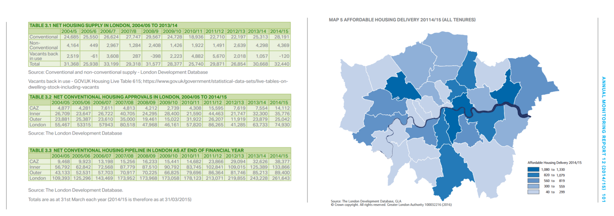
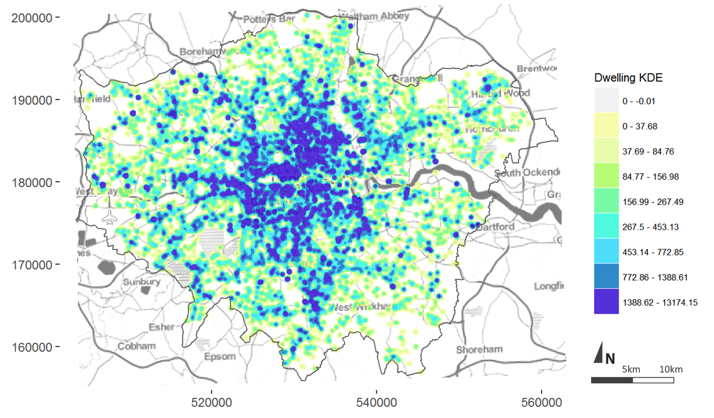
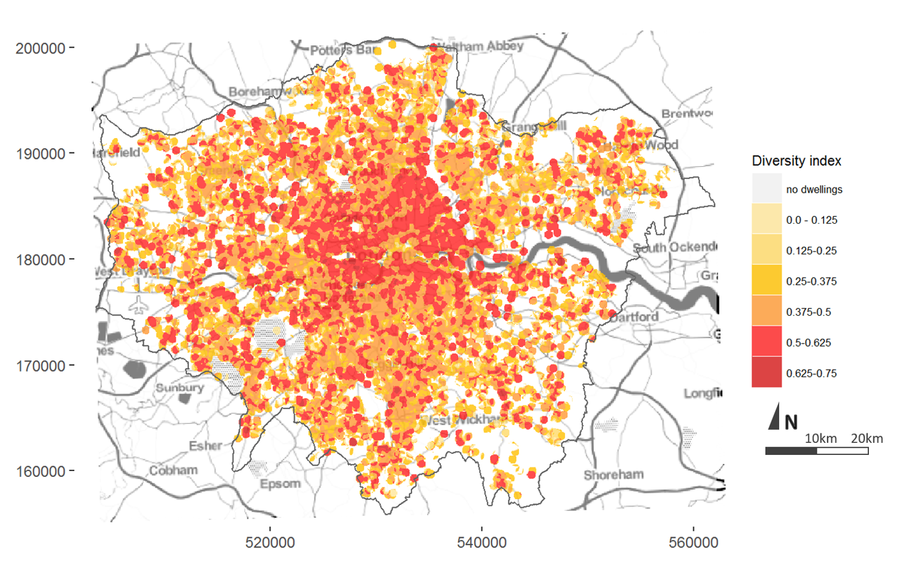
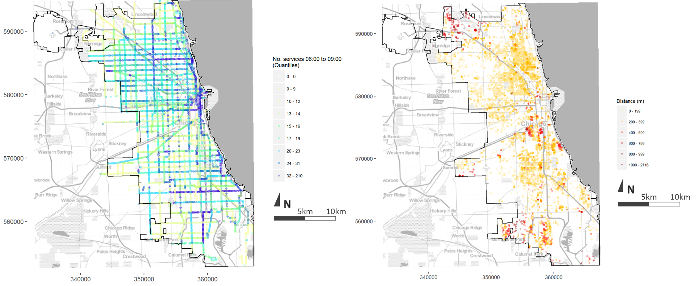

16 July 2017
Monitoring the impact of urban planning policy is necessary to improve future decisions, yet it is the most neglected part of the policy making process. At best, monitoring initiatives are consigned to the ‘would be nice to do if we ever find the time’ basket. At worst, monitoring can be actively discouraged within city governments resistant to the possibility of criticism.
Despite this, improved computing and new data sources can now assist with what once would have been a labour intensive task, compiling the hundreds or thousands of development and land use records required to keep track of a growing city. My paper ‘Towards the Development of a Monitoring System for Planning Policy’ was recently published as a book chapter in ‘Planning Support Science for Smarter Urban Futures’ edited by Geertman et al. (2017) and presented at the Computers in Urban Planning and Urban Management conference in Adelaide last week. It outlines how I designed and programmed a prototype application to undertake the task of monitoring planning policy. The prototype is limited to residential land uses but successfully demonstrates how data can be brought together to measure the achievement of common planning objectives in an automated fashion.
Key to the design of the system was the need for output to retain spatial detail. Traditionally plan monitoring indicators are reported at a city-wide or other large sub-district scale.

Extract from the 2014/15 Annual Monitoring Report of the Greater London Authority
Whilst this does give insight about the development of a city, it is of limited use to planners in identifying precisely where infrastructure investments should be made or where existing policy might be going wrong.
Point maps of the existing and new development sites retain this spatial detail. Kernel density (i.e. heat mapping) techniques are used to turn point measurements into a continuous surfaces of pixels.

Kernel density map of completed development records in London coloured by dwelling intensity (April 2011–2015).
Data sourced from the London Development Database.
Various measurements can then be made to compare two or more surfaces, for example, different snapshots in time or different variables, such as the dwelling diversity map of recent development for London shown below.

Diversity surface for completed residential development in London (2006–2016) by number of bedrooms
Data sourced from the London Development Database.
Although the measurements don’t define what score is inherently ‘good’ or ‘bad’ they can show what areas of the city are doing relatively better or worse in the achievement of a particular objective. This can be seen clearly in the point map below showing distance to frequent public transport from new residential development sites in Chicago.

Left: Number of public transport services per stop from 06:00 to 09:00 on a Wednesday, Cityof Chicago
Right: Distance along road network to a public transport stop serviced on average at least every 10 minutes or more during morning peak hour
Data sourced from Chicago Transit Authority GTFS and City of Chicago Building Permits.
Nevertheless, the data required a lot of cleaning before these outputs could be generated. I chose four cities for the project (Chicago, London, Brisbane and Melbourne) from which I could source site-based land use and development data (open data portals or academic license) in order to assess the state of planning data and make some comparisons. Some of these datasets were more or less raw outputs from the local authority’s computer software used to process development applications. From these outputs it was clear that these systems had not been designed with the task of monitoring in mind, with most output related to administrative tasks such as the date the application was received or referred. Few fields were devoted to information about the development itself, such as land use, number of dwellings or type of building. For cities like London where this information existed in the dataset provided, discussions with the relevant officers revealed that it is usually a painstaking manual addition. This issue becomes more problematic when considering that many cities, like London, consist of a patchwork of different local authorities each with their own systems for doing things.
The prototype system uses scripts to clean the data, make calculations and image tiles, and then upload these outputs to a server from where they are visualised in an interactive mapping application. The application allows users to explore available information to a degree impractical in a traditional paper or pdf report. Users can pan and zoom to specific sites of interest and customise display classifications.
Web interface to prototype monitoring system
These are just a few points from the work that I particularly wanted to share. The publication includes a literature review and in depth description of the case study cities, and the data and methods used to process it. It also contains much more discussion about practical application, limitations and further work. Feel free to contact me via LinkedIn or Twitter @ClaireCities if you would like to follow up on anything.
Monitoring the actual effects of policy has long been an ideal of planning, being necessary to improve decision making, but limited in practice. For those planners who have ever wondered ‘how much does what I do really making a difference?’ this project demonstrates the potential of combining data and technology as a tool to bring the profession a few steps closer to the answer.
This work was undertaken as part of the MSc in Smart Cities and Urban Analytics at the Centre for Advanced Spatial Analysis (CASA) University College London (UCL) under the supervision of Prof Michael Batty and Dr Elsa Arcaute.
Website currently under development, more features to be added over time